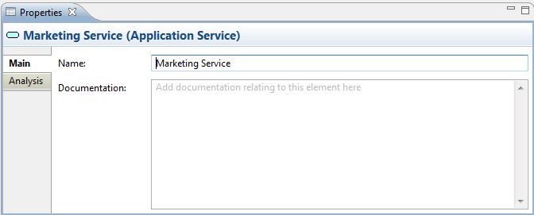
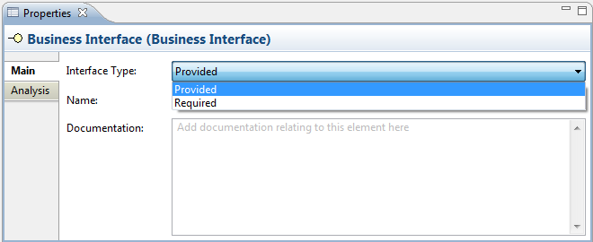
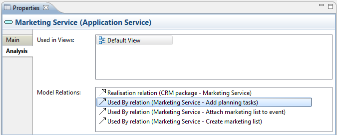

Selecting a model element in the Model Tree or in a View means that you can edit or view the following properties in the Properties Window.
The Main Tab
| Name: | The name of the ArchiMate element |
| Documentation: | A space to enter some user documentation relating to the ArchiMate element |

Editing the "Main" Properties for an ArchiMate Element
 In the "Documentation" text control, URLs that start with "http://" "https://" or "ftp://" will show as a hyperlink. Pressing the Ctrl / Command key will change the cursor to a "hand" cursor and you can open the link in a Browser.
In the "Documentation" text control, URLs that start with "http://" "https://" or "ftp://" will show as a hyperlink. Pressing the Ctrl / Command key will change the cursor to a "hand" cursor and you can open the link in a Browser.
The Business Interface, Application Interface and Infrastructure Interface element types have an additional property:
| Interface Type: | Can be set to "Provided" or "Required". Setting this also changes the element's icon. |

The "Interface Type" property
The Properties Tab
For more information about creating and managing User Properties see User Properties.
The Analysis Tab
| Used in Views: | A table showing the Views (if any) where the selected element is used (displayed in a diagram). Double-clicking on an entry in the table will open the View and select the element in the diagram. |
| Model Relations: | A table showing the Relationships (if any) to and from the selected element in the model. Double-clicking on an entry in the table will select the element in the Model Tree window if it is open. |

Viewing the "Analysis" for an ArchiMate Element